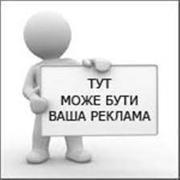

Створення яскравого тексту – магія. Принаймні так це виглядає для читача. Однак за лаштунками цього процесу – чітке розуміння формул та інструментів, які допомагають створити вдалий текст. Знаючи ці універсальні принципи, ви зможете створити будь-який текст: від поста у фейсбуці до власної статті.
Книжка Вільяма Зінссера для всіх, хто хоче навчитися писати цікаві та переконливі тексти, спілкуючись по роботі, в листуванні з друзями або у соціальних мережах.
